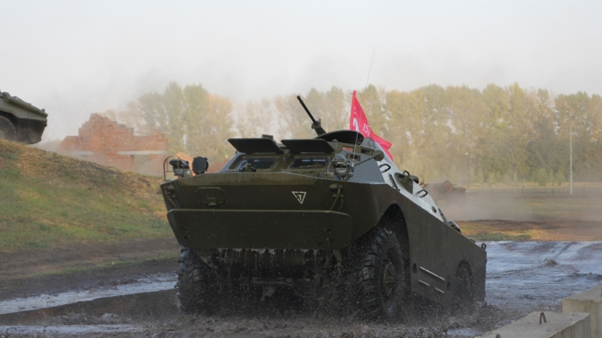

Танкодром
- Режим работы: С 8:00 до 18:00
- Стоимость услуг: ознакомьтесь с перечнем услуг на официальном сайте
- Местоположение: Прохоровка, Белгородская обл., 309000
Возведенный всего лишь за год Танкодром в Прохоровке приобрел популярность сразу же со дня своего открытия в мае 2015 года. На просторах нашей страны это единственный объект, где любой интересующийся отечественной бронетехникой сможет оценить ее технические возможности. Раньше подобные площадки существовали лишь в Чехии и Великобритании, но теперь к их числу присоединилась и Россия. Танковый полигон занимает 11 гектаров, сама трасса для движения техники имеет протяженность около 3 километров. Рельеф территории создан искусственно. На нем специально обустроены холмы и ямы с водой, элементы строений и мосты. С помощью этих препятствий наглядно демонстрируется мощь военных машин перед трибунами, на которых могут спокойно разместиться 1 300, а то и больше людей.  В распоряжении танкодрома имеются действующие единицы боевой техники, пригодной к применению в самых сложных условиях.